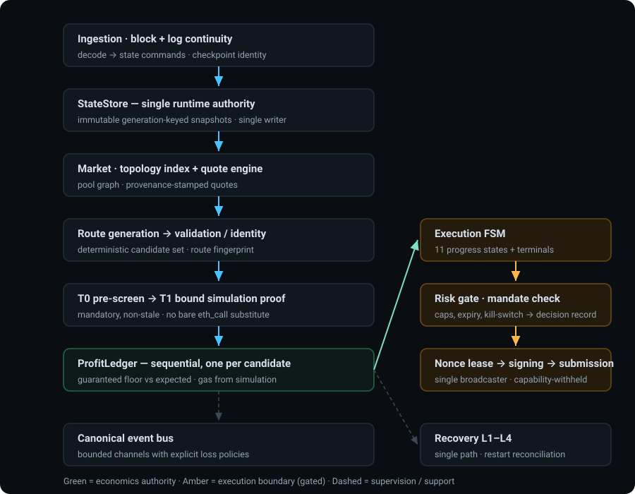

MEV System Re-Architecture
A clean-room rebuild of the arbitrage system as a 24-member Rust workspace with an acyclic dependency graph, one state authority, one profit ledger, an eleven-state execution state machine, and a transaction send-path law — governed by milestone control, independent adversarial review, and an explicit prohibition on live execution.
Why the architecture evolved
The legacy system's defects were not bugs to patch; they were structural properties. Patching them one at a time inside a single strongly-connected crate would have been undone by the next change. So the constraints were extracted first, then the system was rebuilt under them.
| Legacy finding | Constraint it became | Enforced by |
|---|---|---|
| Single strongly-connected component, 40+ dependency cycles; layering was directory naming | The crate graph must be acyclic, and layer membership must be a property of the dependency edge | Spec-defined dependency DAG + CI tripwires rejecting forbidden edges |
| Runtime state authority split three ways, reconciled by hand-written invalidation | Exactly one runtime state authority, with a single writer and immutable snapshots | Rust ownership: the writer is the only object that can mutate; readers hold an immutable generation |
| Three-plus divergent profit calculators, none canonical | Exactly one profit ledger per candidate, computed sequentially across hops, never summed | Single type in the shared domain crate; a "no second ProfitLedger" tripwire |
| Detection and execution used two disagreeing simulation paths | One simulation owner; a bound, non-stale proof is mandatory before submission | Only one crate may issue a decision-grade call; the FSM requires a valid proof to advance |
| 16 broadcast call sites, two dead-but-armed; recovery paths could broadcast | No send without six conditions, each fail-closed, with no alternate path | Crate boundaries, capability withholding, FSM-only reachability, negative tests, a grep tripwire |
| Seventeen ad-hoc event channels; three disjoint recovery components | Seven canonical channels with explicit loss policies; one L1–L4 recovery path | Channel-policy tests and a ban on adding channels outside the ratified list |
| Test counts that proved structure rather than truth | Tests must assert architectural invariants; copying the legacy suite is prohibited | Invariant-first test naming law and an explicit "no test-count theater" rule |
Level 1 — System architecture
The system is a one-way pipeline from observation to an authorization boundary, with research living outside the hot path and recovery supervising rather than participating.

The key structural idea
Everything above the execution boundary is analysis and can be wrong without costing anything except latency. Everything at and below the boundary is authorization and must fail closed. The two are separated by an explicit seam — a bound simulation proof plus a risk decision — rather than letting a profitable number cross the boundary on its own. Profitability alone never authorizes execution.
Level 2 — Component architecture
For the components where the interesting correctness constraints live: responsibility, inputs/outputs, relationships, and why each exists — without publishing the algorithms.
| Component | Responsibility | Input → Output | Correctness constraint |
|---|---|---|---|
| State store | The single runtime authority for pool state, chain ancestry and generation identity | Ordered state commands → immutable, block-bound generation snapshots | Exactly one writer; readers never mutate. Every snapshot carries generation, block number and hash, and candidates die with their generation — so no stale opportunity survives a reorg. |
| Ingestion / chain tracking | Continuity, gap and divergence detection; canonical log ordering; checkpoint identity | Head + log stream → ordered, decoded state commands | Must be able to say "I am missing data" rather than silently apply an incomplete view. The checkpoint backend fails closed. |
| Topology index | Derived pool graph used for route search | Discovered pools → adjacency structure, rebuilt at boot | Derived, not authoritative — recomputed from state, never a second source of truth. |
| Route generation | Produces candidate cycles deterministically for a given state | Search root + snapshot → candidate route set in deterministic order | Determinism is the load-bearing property: the same generation yields the same routes, so results are replayable and comparable across runs. |
| Route validation / identity | Eligibility checks plus a chain-independent fingerprint identifying a route's shape | Candidate route → validated route + fingerprint | The fingerprint identifies pool, direction, fee and hop order without depending on chain, so evidence and fixtures stay comparable. It is treated as frozen. |
| Quote engine | Computes execution prices and stamps provenance | Route + state snapshot → quote with provenance record | Every quote records source, block, generation and freshness. Fixture-derived quotes are labeled as such and are structurally ineligible for live selection. |
| Profit ledger | The one economic authority for a candidate | Per-hop amounts, fees, flashloan cost, simulated gas → guaranteed floor and expected value | Hops chain sequentially — never summed. Gas comes from simulation of the actual calldata, never a floor constant. Only the guaranteed floor can authorize. Competition estimates must not contaminate it. |
The authorization half
| Component | Responsibility | Input → Output | Correctness constraint |
|---|---|---|---|
| Simulation tiers | A cheap pre-screen, a mandatory bound proof, and an end-to-end fork check | Candidate → pre-screen verdict, then bound proof, then fork validation | The bound proof must be valid and non-stale before submission; a bare read-only call cannot substitute for it. The simulator consumes state — it never becomes a state authority. |
| Execution state machine | The only component allowed to advance a candidate toward submission | Opportunity event → ordered progress states through to confirmed or terminal | Eleven progress states with defined exit conditions, timeouts and failure behavior. Built calldata must be byte-equal to the simulated calldata. No other route reaches submission. |
| Risk gate / mandate | Human-set caps, allowlists, expiry and kill-switch, checked before signing | Candidate + mandate → allow or reject, with checked limits recorded | The mandate cannot be modified by an automated agent. Rejections record what was checked, so an authorization decision is auditable afterwards. |
| Nonce / signing / submission | Exclusive lease per attempt; signer chosen by explicit configuration; the only broadcast site | Approved candidate → leased nonce → signature → accepted / rejected / unknown | Lease exclusivity prevents duplicate submission under concurrency. No fallback signer. Submission must distinguish rejected from unknown, because "unknown" forces reconciliation rather than retry. |
| Recovery | One graduated path for provider loss, interruption, corruption and reorgs | Failure signal → graduated recovery decision, executed against state | Recovery decides; state executes. Recovery paths inherit authorization and re-assert the gate — a failure path is never an exemption. |
| Audit ledger & lineage | Append-only hash-chained record of decisions, plus a per-candidate provenance chain | Decisions and lifecycle events → durable, verifiable history | Appends must not require re-verifying the whole chain. Lineage must be able to explain why a candidate existed and what it was worth at each step. |
| Research platform | Strategy registry, run cards, attribution and decay — the offline loop | Execution records and exports → approved parameter sets | The only return path into the engine is an approved parameter set. Research must have no dependency edge to signing, nonce or submission. Approved versions are immutable. |
Ownership rules that make the architecture enforceable
- One writer per authority: the state writer, the nonce engine and the gas model are each single-writer, enforced by crate ownership rather than by convention.
- The execution crate is the sole consumer of opportunities. There is no "orders" channel — orders are internal to it.
- Ingestion does not know recovery exists; both depend only on the shared bus and domain types.
- Strategy never signs and never mutates a candidate after handoff — after handoff, the candidate is execution-owned.
- Simulation owns all three tiers; no other crate may issue a decision-grade chain call.
- Signing owns both signer implementations; selection is explicit configuration, never a runtime fallback.
- Forbidden edges are CI-enforced: research may not reach execution, signing, nonce or submission; strategy may not reach signing; state may not depend on ingestion or recovery.
The transaction send-path law
No send without all six conditions, evaluated in order, each fail-closed:
- Authorized live mode — the execution gate is open, and the capability is withheld when it is not (no signer or transaction manager is attached at all).
- Valid simulation proof — bound to this candidate, non-stale.
- Valid economics — the post-simulation guaranteed floor is non-negative, and the minimum-output value derives from that same ledger.
- Valid risk decision — the mandate check returns allow, with the checked limits recorded; caps and kill-switch clear.
- Valid nonce lease — an exclusive lease for this attempt.
- Valid signer/relay authorization — an explicitly configured signer, with relay backends only where their evidence requirement is satisfied.
No alternate path is allowed. Enforcement is layered: crate boundaries mean only one crate can broadcast, capability withholding means there is nothing to broadcast with, the state machine is the only route to the submitted state, negative tests assert that no unauthorized send exists, and a CI tripwire bans the raw broadcast call outside its owning crate. Consequence paths — replacement, cancellation, reorg-driven replacement — inherit authorization and re-assert the gate rather than inheriting an exemption.
Testing law
Tests must prove architectural truths, not reproduce legacy structure. Naming enforces this:
test_coordinator_does_y() becomes
assert_t1_required_before_submission();
test_unified_system_does_z() becomes
assert_single_state_store_authority(). Success is measured by invariant coverage,
not test-count preservation, and copying the legacy suite forward is explicitly prohibited as
"test-count theater."
What has been implemented and verified
The rebuild runs on milestone control. Nothing counts as done until an implementation report, an independent adversarial gate, and a closure adjudication all exist for it. Below is the current state, exactly as the latest closure artifacts record it.
Live execution posture — unchanged throughout
Every closure artifact in this project repeats the same statement: live execution is not authorized. No report anywhere in the record claims live readiness. The signing, submission, nonce, execution, simulation, recovery and API crates are one-line scaffolds; no signer or key-handling surface exists in the engine; and a guard test asserts that production source contains no signing, sending or raw-key tokens. A repository-wide search for a live-authorization assertion returns nothing.
| Stage | What it delivered | Status |
|---|---|---|
| Safety containment gate | Complete inventory of every broadcast and sign site; gating verified by source inspection; consequence paths hardened to re-assert the gate; dead-but-armed senders recorded for deletion | VERIFIED |
| Core correctness gate | V3 tick traversal, liquidity and swap math re-derived from the protocol reference: golden, differential and termination/property suites written from first principles, nothing copied from legacy tests | VERIFIED |
| Test baseline gate | Full suite made to complete with zero unexplained failures; every ignored test individually inspected and classified; no silent ignore concealing a core defect | VERIFIED |
| Independent adversarial gate | A separate reviewer rebuilt the send-capability graph from fresh searches, re-ran every test surface, and reconciled the count discrepancy — while publishing its own independence caveat | VERIFIED |
| Workspace foundation | 24-member workspace scaffold, acyclic dependency graph, architecture tripwires live, legacy tree preserved as a rollback point rather than destroyed | IMPLEMENTED VERIFIED |
Build milestones
| Milestone | What it delivered | Status |
|---|---|---|
| Core foundations | Shared domain types, math, observability, event bus and storage — including the profit ledger, mandate and audit ledger types. An independent post-remediation pass confirmed four original blockers genuinely fixed, among them replacing non-cryptographic hashing in the audit ledger | VERIFIED |
| State & ingestion | Single-writer state store with generation snapshots, undo journal and rollback; chain tracker with continuity, gap and divergence detection; V2 protocol decode with real-mainnet goldens | VERIFIED |
| Market, strategy & gas | Topology index, quote engine with provenance, deterministic route generation, validation and identity, T0 pre-filter — and a route-search throughput gate that passed only after failing review twice and being independently re-failed once | VERIFIED |
| Protocol encoding & flashloan planning | Curve math and adapter, a flashloan plan builder, and a canonical calldata encoder — with byte-exact goldens verified three independent ways: the specification, the frozen contract's own decoder, and an external decoder | VERIFIED |
| Fork-backed acceptance | End-to-end execution on a pinned local fork: two multi-hop golden routes executed with realized output matching prediction at every hop, plus seven fail-closed negative cases each rejected by its intended gate — identical across three fresh sessions | VERIFIED |
| Simulation & risk gate | Bound simulation proofs, override-accuracy validation and the mandate check | PLANNED |
| Execution, nonce, signing, submission | The eleven-state state machine, lease lifecycle, signer, and backends with send-path-law tests and an end-to-end dry run on a fork | PLANNED |
| Recovery & API | Graduated recovery with restart reconciliation, plus a read-only API | PLANNED |
| Hardening, validation, research, security, final validation | Failure injection and latency verification; end-to-end validation evidence; the research platform; zone isolation and negative-capability suites; an independent adversarial re-verification of the whole refactor | PLANNED |
How seriously the review process takes itself
A closure review found that the project's own specification was inconsistent with its own ratified amendment — the amendment's canonical text was absent from the committed documents while later reports cited it as law. The verdict was therefore "milestone NOT closed", with the sole blocker classified as a canonical-record defect rather than an engineering failure. A bounded restoration task then repaired it, and the tagging decision was explicitly deferred until the record was consistent. The milestone was not declared closed on a technicality. Publishing that outcome is the point.
Important engineering decisions
| Decision | Choice | Reasoning |
|---|---|---|
| Rebuild rather than refactor in place | Preserve the legacy tree intact as a rollback point, then build a new workspace alongside it | A single strongly-connected crate cannot be incrementally layered — every edit is fighting the dependency graph. Preservation also keeps the legacy suite available as forensic evidence without letting it become the acceptance criterion. |
| Pre-entry safety gates before any restructuring | Four gates — safety containment, core correctness, test baseline, independent re-verification — had to pass against the legacy tree before milestone 0 could start | Refactoring a tree with accidental live-send paths propagates those paths. Safety was made a precondition, not a follow-up. |
| Chain-agnostic core with an explicit target profile | Chain identity, venue deployments and fork identity live in an explicit, evidence-backed profile; a target chain is declared rather than hardcoded across the codebase | The legacy design assumed a chain implicitly in many places. Making it explicit also enables a fail-closed capability model: unknown, missing or unverified capability ⇒ deny. |
| Frozen executor contract | The on-chain executor is pinned by content identity, and every fork evidence record captures chain, block, hash, executor revision, deployment address and profile revision as one tuple | A block number alone is not sufficient provenance. If any element of the tuple differs, the evidence does not apply — this prevents "the test passed, so it works" on state that has silently moved. |
| One canonical encoder | A single encoder authority per protocol family; protocol-specific optimizations may live beneath it but may not create a second semantic definition of the same transaction | Multiple competing encoders were one of the legacy's "five universes." The rule is structural: one semantic definition, one authority. |
| Determinism as a first-class requirement | Route generation, candidate ordering and encoding are all deterministic, and evidence records include digests so runs can be compared byte-for-byte | Non-deterministic evidence cannot be replayed or disputed. Determinism is what makes an independent re-verification possible at all. |
| Legacy tests are forensic, not normative | Expected values derive from the protocol oracle or from hand-derived integers — never from copying an existing test's expectation | Two golden values that failed were corrected against the oracle, never the reverse. Otherwise a wrong legacy expectation silently becomes the specification. |
| Human authority stays human | Risk mandates cannot be modified by an automated agent; approved strategy versions are immutable; research has no dependency path to execution; live enablement requires an explicit human act | The system is designed so that an agent — including the one building it — cannot grant itself execution authority. |
Forward capability ledger
A governance mechanism worth highlighting: researched capabilities are given a persistent
identity (C1–C8) that survives milestone boundaries, so a capability
is never silently dropped just because the active milestone does not implement it. Each carries a
status, an intended owner, prerequisites, an acceptance-evidence obligation, and an explicit
disposition when deferred or rejected.
| ID | Capability | Status | Disposition |
|---|---|---|---|
| C1 | Lower-latency state transport via colocated infrastructure | ARCHITECTURALLY PRESERVED | Forward-owned, non-blocking. Must enter through the existing state-source boundary — a faster transport is a source of state, never a second authority. |
| C2 | Local EVM simulation backend as an alternative to remote state-override calls | PROPOSED | Forward-owned to the simulation milestone, subject to an explicit backend ratification decision. Must not make the mandatory bound proof optional just because it is faster. |
| C3 | Pending / preconfirmation / sequencer visibility | PROPOSED | Deferred with explicit future ownership. Provisional data must enter as an observation and can never silently become execution authorization. |
| C4 | Incremental search over state-affected roots instead of a full scan every block | RATIFIED, NOT IMPLEMENTED | Ratified; forward implementation required before latency verification. Must be an optimization of search ordering only, with a full-scan fallback and candidate-set equivalence proven. |
| C5 | Bounded parallel evaluation of independent candidates | RATIFIED, NOT IMPLEMENTED | Ratified; forward implementation required before latency verification. Must use a dedicated bounded CPU pool, never unbounded runtime workers, and must be deterministic. |
| C6 | Compact protocol encoding knowledge in the hot path | ARCHITECTURALLY INTEGRATED | Represented by the canonical encoder boundary; the protocol-encoding milestone is its principal realization. Optimizations may exist beneath the authority but never beside it. |
| C7 | Direct node / database / DEX-sync derived state sources | PROPOSED | Future infrastructure capability, non-blocking. Must remain a derived input source feeding the canonical state path — explicitly not a competing runtime authority. |
| C8 | Low-level gas / assembly optimization | DEFERRED WITH OWNER | Intentionally deferred until correctness is stable, gas baselines exist and bottlenecks are measured. Evidence must show before-vs-after gas plus behavioral equivalence. Must not become an earlier milestone blocker, and must not be silently forgotten. |
Why this matters more than it looks
The failure mode it prevents is familiar: a promising optimization gets researched, written up, and then quietly disappears because no current milestone owns it. Here every capability has a permanent identity, a status, an owner and an evidence obligation — so "deferred" is a recorded decision with a return path, not an omission.
Remaining work & current limitations
Stated plainly. This is the part that keeps the project honest.
| Limitation | Detail |
|---|---|
| The rebuild is only partially built | Foundations, state and ingestion, market and strategy, and protocol encoding are implemented and gated. Simulation and risk gating, the execution state machine, nonce, signing, submission, recovery and the API are specified but not implemented — those crates are one-line scaffolds. |
| The engine cannot run end to end | There is no engine loop. Route and quote generation exist and are tested in isolation, but nothing yet drives a candidate from detection through simulation to a decision in a running process. |
| Live execution is not authorized | Repeatedly and explicitly, across every closure artifact. There is no signing capability, no broadcaster, no key-handling surface in the engine, and no report claiming otherwise. This is a deliberate governance state, not an oversight. |
| The milestone is not closed | All individual stages are recorded as closed at the engineering level, but the overall milestone verdict is not closed, pending a canonical-record repair and an owner tagging decision. The restoration work was completed in the working tree; the commit and tag remain owner actions. |
| Several capabilities are ratified but unimplemented | Incremental affected-state search and bounded parallel evaluation are ratified and required before latency verification, but not yet built. Both are tracked with acceptance criteria rather than left implicit. |
| Performance evidence is milestone-era | The route-search throughput gate passed with a worst-case block comfortably inside its budget, but that measurement belongs to its milestone. It has not been re-run recently and should not be read as a current performance claim. |
| Only one target chain profile is populated | The core is designed to be chain-agnostic with an explicit target profile, but only one profile carries a complete evidence tuple. Another chain would require its own. |
| No live revenue, no audit, no deployment | None of these exist. No live trading, no third-party security audit, no production deployment. Any claim to the contrary would be unsupported by the record. |
Current status at a glance
| Dimension | Status | Level |
|---|---|---|
| Specification & ratified architecture | Complete, reconciled, and consistent with its ratified amendments after a repair pass | DOCUMENTED |
| Workspace structure & dependency discipline | Built, compiling, and tripwired | VERIFIED |
| Pre-entry safety & correctness gates | All four passed against the legacy tree, with an independent re-derivation | VERIFIED |
| State, market, route, quote & encoding layers | Implemented and independently gated | VERIFIED |
| Fork-based end-to-end contract acceptance | Passed on a pinned fork, with fail-closed negatives proven | VERIFIED |
| Milestone closure | Stages closed at engineering level; overall milestone not closed, pending record-repair completion and owner tagging | IN PROGRESS |
| Simulation, risk gate, execution, nonce, signing, submission, recovery, API | Specified in detail; not implemented | PLANNED |
| Live trading / production deployment | Explicitly not authorized; capability surface absent | NOT ESTABLISHED |
| Profitability evidence | None. No live or production revenue claim exists | NOT ESTABLISHED |
Summary
This is a work in progress. The unglamorous part — establishing safety, correctness baselines, dependency discipline, evidence conventions, and a review process willing to say "not closed" — is genuinely done and independently checked. The execution half of the system is specified in detail and not yet built. It does not run end to end, it does not trade, and it is not authorized to.